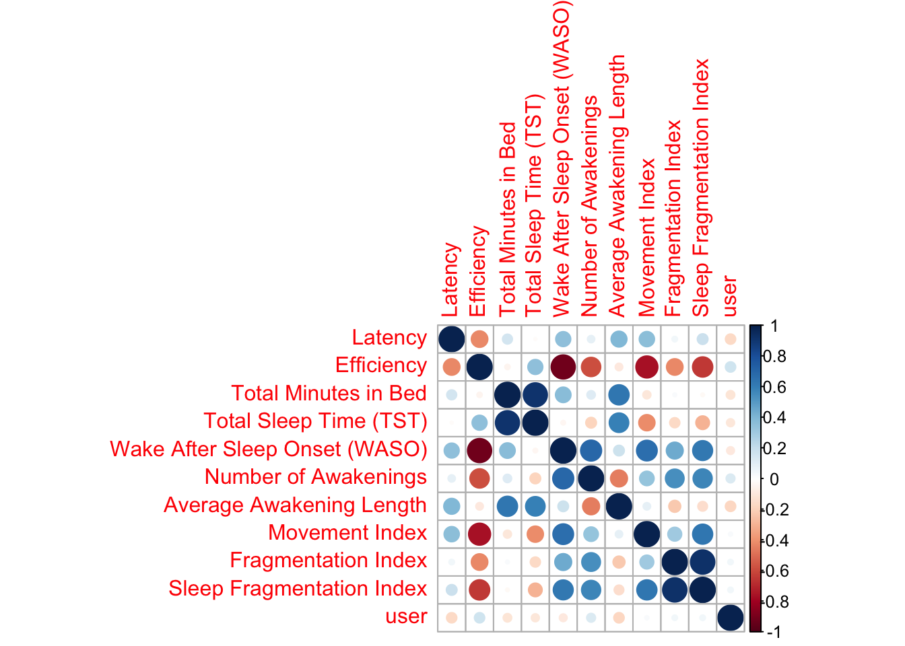
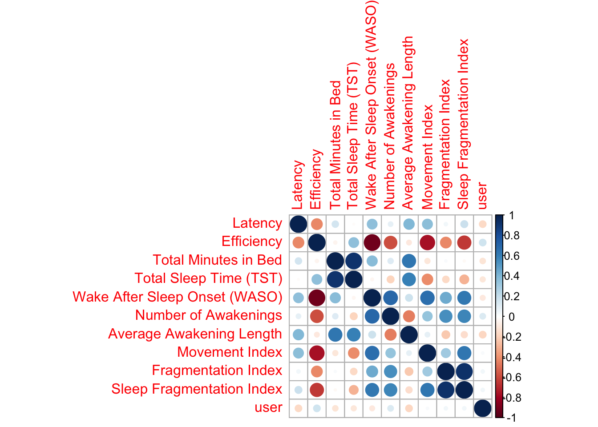
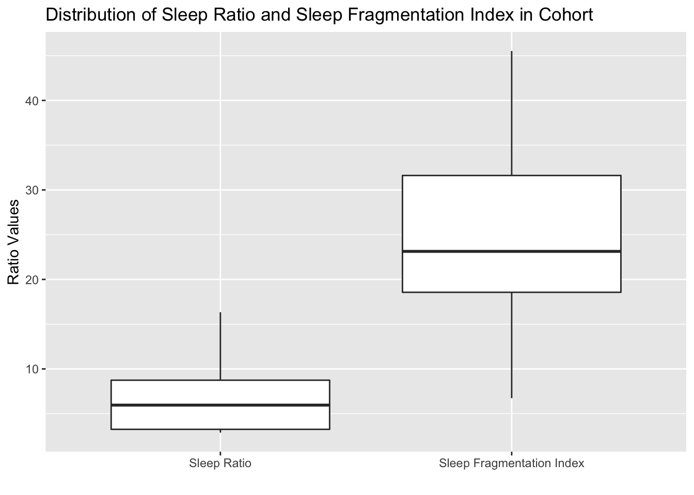

Chapter 5 Results
The results chapter is broadly divided into two sections - one for each of the goals of this project. The first section will document all preliminary findings related to the sleep measurements and the procedure of defining a metric for quantifying quality of sleep.
5.1 Metric Formulation
5.1.1 Preliminary Observations
Before we delved into the data analysis part we wanted to see how each of the variables in the sleep.csv file is distributed. Upon digging into the data we realized that user 11 had no measurements for his sleep. The authors of the data did not mention a reason as to why there were no records for that particular user. Since our problem statement is about quanitfying sleep quality and the factors affecting it, we thought it only logical to remove user 11 from our analysis altogether.
Formulating a metric requires an extensive analysis of the spread of the data and each variable in it. It is also important to determine correlated variables to avoid duplication and/or multicollinearity while defining the metric. Below is a heatmap we generated for variables that do not have the format of a time stamp (for example hh:mm). We made the following observations -
- Latency does not seem to be correlated with anything which is interesting as it is defined as the time taken for the user to fall asleep after he gets into bed
- Interestingly enough, the total sleep time is not correlated with neither Number of Awakenings and Average Awakening Length. One would suspect that the form is negatively correlated to the latter two but that is not the case as these correlation coefficients are statistically significant with a default critical value of 0.05
- Movement, Fragmentation and Sleep Fragmentation index are highly correlated and this relationship is statistically significant. This observation is not surprising as sleep fragmentation index is defined as the ratio of movement index and fragmentation index
- Wake After Sleep Onset (WASO) is strongly correlated to almost every variable with the direction being positive except for Latent Efficiency
 

5.1.2 Distribution of Variables
The clustering of heatmap showed that there are 3 clear clusters which are consistent with the observations we made. To avoid multicollinearity, we decided to pick 1-2 variables from each of the clusters depending on the strength and statistical significance of the correlation coefficient. Let’s denote our metric with M and is defined as a characterization of quality of sleep. Intuitively, M should be higher for users that are able to sleep through the night and do not have any trouble falling asleep. Expanding this thought process further and combining it with the correlation analysis, we came up with the following associations -
- M \(\alpha\) Total Sleep Time (TST)
- M \(\alpha\) \(\frac{1}{SleepFragmentation Index}\)
- M \(\alpha\) \(\frac{1}{Latency}\)
- M \(\alpha\) \(\frac{1}{AverageTimeSpentAwake}\)
Note that (2) is a ratio while others have units “hh:mm”. So, keeping that in mind we combined all the above relationship as -
\[\begin{align*} M \alpha (\frac{TST}{AverageTimeSpentAwake} + \frac{1}{SleepFragmentationIndex}).\frac{1}{Latency} \end{align*}\]
The units of the right hand side are “per hh:mm” (because of addition of latency). Since this expression was constructed using just the correlation, to establish a stronger relationship i.e. equality, it is important to look at the distribution of each of these variables. It might happen that even though intuitively one might think that a variable should have an effect on the sleep quality but if in reality the distribution of that variable turns out to be narrow then including it would not be a good idea. We would like to stress that the number of samples available to us are very less to do this sort of analysis without any selection bias i.e. inferences might hold for this small cohort but not necessarily for a bigger cohort.
